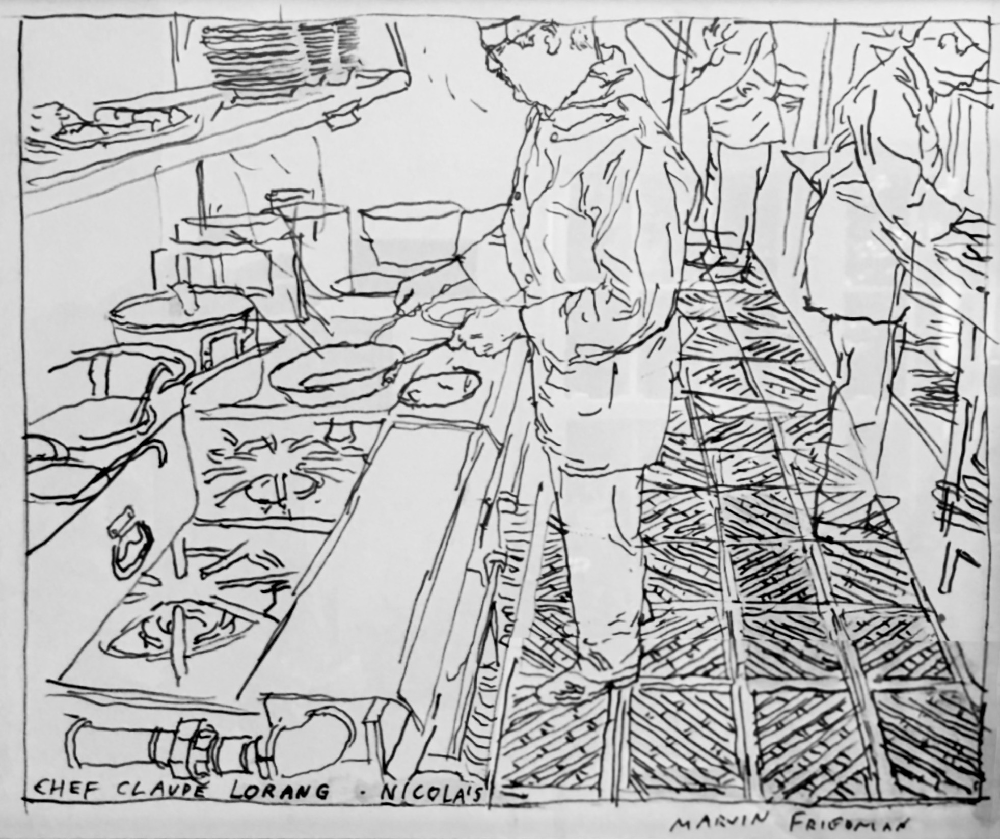
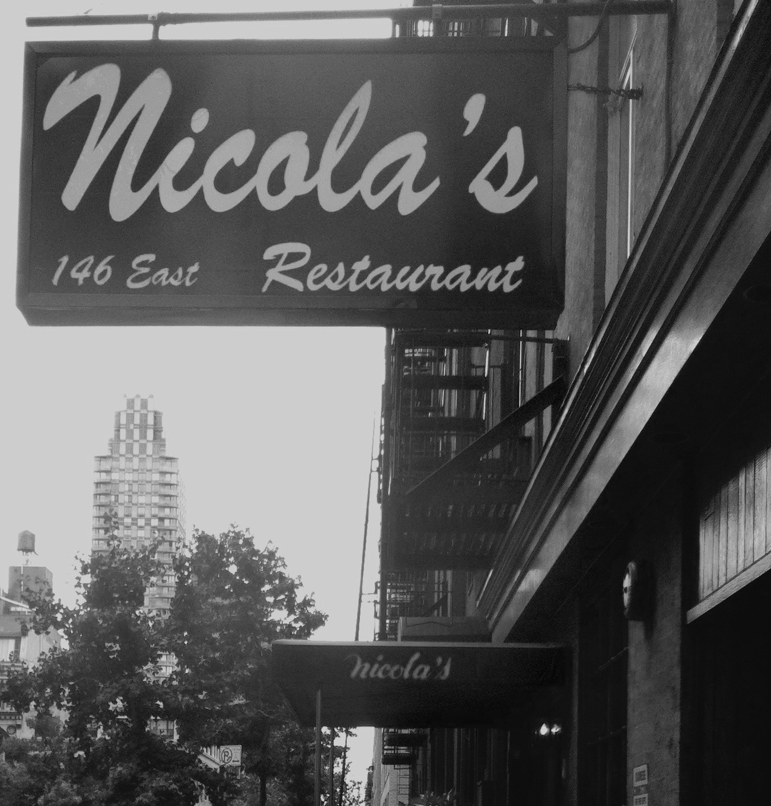

About
My grandfather, Claude, was raised on a farm in Alsace, eastern France, during World War II. One of his chores was force-feeding geese for fois gras, a job he hated and still describes as awful. He began working in kitchens at a young age to guarantee a hot meal, before moving to Paris to learn the trade.
Later, he immigrated to New York City with my grandmother and mother, where he opened a restaurant in Yonkers called Nicola's with an Italian partner. What kind of food did they serve? A newspaper once asked him that question, and his answer was simple: "French and Italian". He ran the restaurant for decades before retiring back in France. His favorite dish is chicken à ma façon, or "chicken my way". I would have to agree.

My family always tries to get recipes from Claude but it has never been easy. His directions usually are frustratingly imprecise and based on a lifetime of experience. If I ask how much to add, it's 'a soup spoon or two'. If I ask for a specific measurement, he tells me to add 'a good amount'. How do I know if something is ready? 'When it's done' he says. How much salt and pepper should I add? 'To taste!' he says.
These are his recipes taken verbatim with pencil and paper and lightly edited for clarity.
I created this site to make family recipes easy to access, without ads, clutter, or distractions. I also wanted the flexibility to adjust servings, scale ingredients, manage favorites, and customize recipes so cooking is easier and more practical.
Anything marked "Notes" are comments I added to help clarify the instructions.
